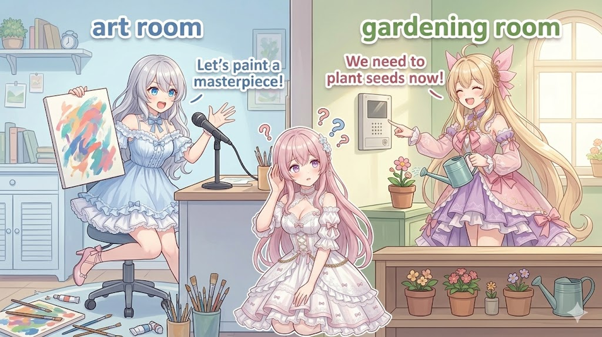

今日やったこと
AIショートアニメを自動で組み立てる仕組みを育てています。今日はその中の 「言葉の取り違えで誤解が生まれるコメディ（すれ違いネタ）」のテンプレートを大改修 しました。具体的には次の3つです。
- すれ違いコメディの台本を、6つの観点でまとめて改善
- タイトルカードの場面だけ、自動の“名前直し”ルールから外した
- 物語のジャンルを5種類まとめて追加（イベント／恋愛すれ違い／シリアス和解／メタパロディ／日常ギャグ）
どれも「笑いって、勢いじゃなく“設計”でつくれるんだ」という話につながります。
学び①：すれ違いは「背景」で見せると伝わる
今回いちばん効いた改善が 別部屋の背景にしたこと です。
すれ違いコメディは「二人が物理的に同じ場所にいない」ことが多いのに、ずっと同じ部屋の絵だと、観客が混乱します。そこで会話している二人を別々の部屋の背景に置くだけで、「あ、この二人は離れてしゃべってるんだ＝だから話が噛み合ってないんだ」が一目で伝わります。
ポイント：説明セリフを足す前に、まず“絵の置き場所”で状況を語れないか考える。背景は無料のナレーションです。
学び②：立ち位置を固定すると「ツッコミ役」が安定する
次に ルピナス（進行・ツッコミ役）の立ち位置を決め直しました。
コメディは「ボケる人」と「ツッコむ人」の役割がブレないことが大事。画面のどちら側に誰が立つかを固定すると、観客は無意識に「右の子がツッコミ係だな」と覚えてくれて、毎回考えなくても笑いどころが分かるようになります。
さらに今回、常識人ポジのツッコミ役を追加しました。ボケが暴走したときに受け止める人がいると、笑いが“着地”します。ボケっぱなしは意外と疲れるんです。
学び③：「濃度」と「つかみ」を分けて調整する
残りの改善は ネタの濃度 と つかみ です。
- 濃度：笑いどころを詰め込みすぎると、観客が消化しきれません。一本の中で『ここぞ』の数を絞り、間（ま）を残すほうが効きます。今回は密度を少し下げて、聞き取りやすくしました。
- つかみ：動画は最初の数秒で「これは面白そう」と思ってもらえないと離脱されます。冒頭の入りを、いきなり誤解が始まる形に作り直しました。
コツ：濃度は『引き算』、つかみは『前倒し』。面白い場面を後ろに温存せず、早めに一発見せると最後まで観てもらえます。
学び④：自動の“名前直し”に、例外をつくった
うちのテンプレには、登場人物の呼び方を自動でそろえる仕組みがあります。たとえば妹たちが長女を呼ぶときは必ず『お姉ちゃん』に直す、といった具合に、呼称ミスを機械が直してくれるんです。
ところが、この仕組みが タイトルカード（題名を出す画面） にまで働いてしまうと困ります。タイトルは“会話”ではなくロゴのような表示なので、名前のルールを当てはめると変な書き換えが起きてしまう。
そこで今日は タイトルカードの場面だけ、自動補正の対象から外しました。
学び：便利な自動処理ほど『どこに適用しないか（例外）』を決めるのが品質の分かれ目。全部に一律でかけると、必ずどこかで暴発します。
学び⑤：ジャンルの引き出しを5つ増やした
最後に、物語の型（ジャンル）を5種類まとめて追加しました。
- イベント：季節行事やお祭りなど、状況そのものが舞台になる型
- 恋愛すれ違い：気持ちの誤解が転がっていく型
- シリアス和解：一度ぶつかって、ちゃんと仲直りする型
- メタパロディ：『これ動画だよね』と作り手側に踏み込む型
- 日常ギャグ：なんでもない日常から笑いを拾う型
引き出しが増えると、同じキャラでも毎回ちがう味の話が作れます。テンプレ作りは“一発のすごいネタ”より、選べる型をコツコツ増やすほうが長く効きます。
まとめ：今日の有意義ポイント
- 状況はセリフより背景で語る：別部屋の絵にするだけで「すれ違い」が一瞬で伝わる。背景は無料のナレーション。
- 立ち位置を固定する：誰がツッコミ役かを画面の配置で覚えてもらうと、毎回笑いどころが安定する。
- ツッコミ役を足すとボケが着地する：受け手がいないボケは観客が反応に困る。
- 濃度は引き算、つかみは前倒し：詰め込みすぎず間を残し、面白い場面は早めに一発見せる。
- 自動処理には“やらない例外”を決める：タイトルカードを名前補正の対象外にしたように、一律適用は必ずどこかで暴発する。
- 型（ジャンル）はコツコツ増やす：一発の名作より、選べる引き出しの数が長期的に効く。
笑いは勢いじゃなく“設計”でつくれる——今日いちばんの実感でした。